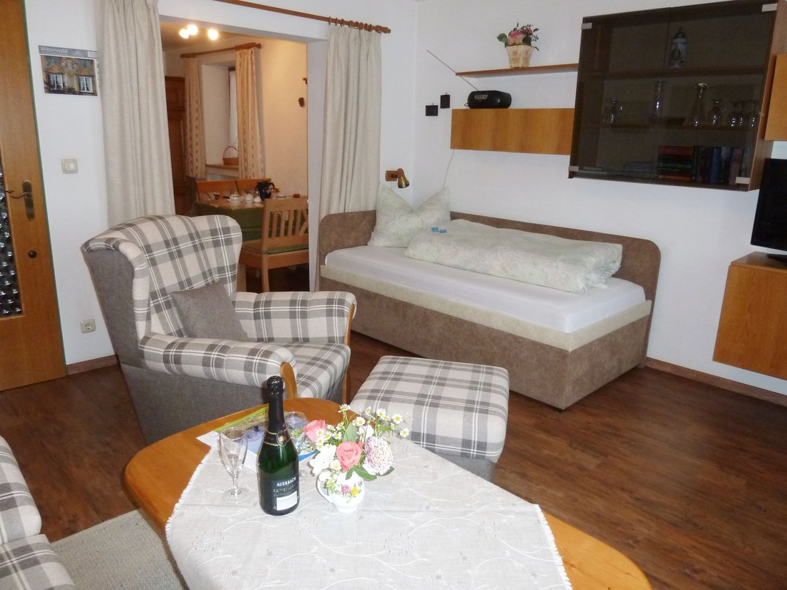
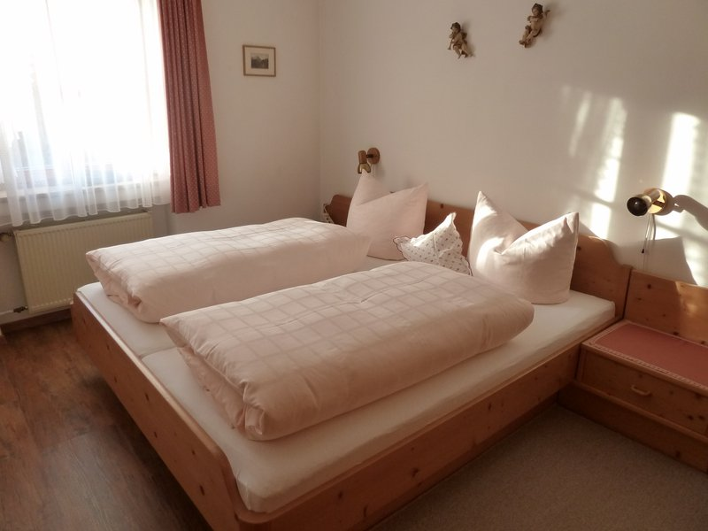
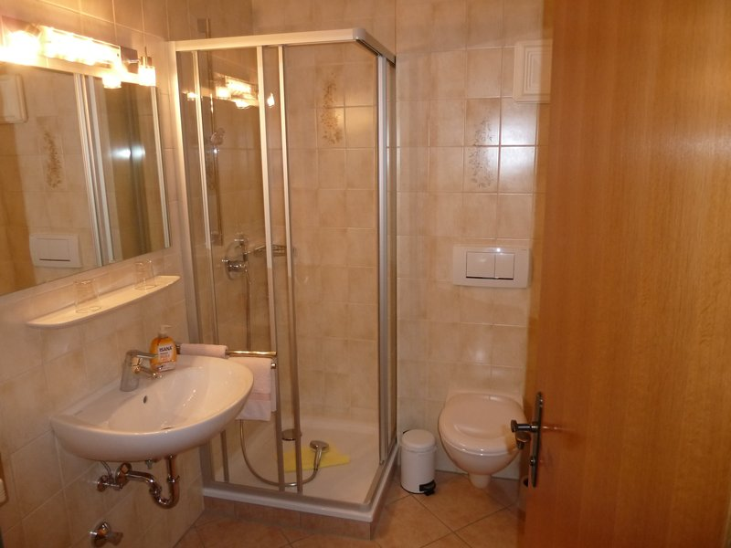

Ferienwohnung im Parterre
47 m² · 2–3 Personen · ebenerdig
Die im Parterre liegende Ferienwohnung mit 47 m² hat ein separates Schlafzimmer, ist gemütlich eingerichtet und lädt zum Wohlfühlen ein. Der Garten am Haus ist für sonnige Stunden mit Gartenmöbeln ausgestattet.
Unser Service:
- Familienfreundlich
- Garten und Parkplatz am Haus
- Wohnküche
- DVD-Player, Sat-TV, Radio
- freies WLAN
- Dusche/WC
- Handtücher vorhanden
- Bettwäsche vorhanden
- Getrennte Betten möglich
- Kein Teppichboden
Preis für 2 Personen (ab 5 Nächte)
60,00 € / Nacht
Preis für 3 Personen (ab 5 Nächte)
67,00 € / Nacht
Inklusive: Küchen- und Badezimmerwäsche,
Endreinigung, freies WLAN.
Exklusive: Kurtaxe.